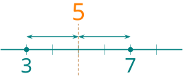
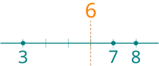
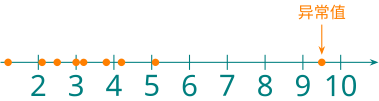

寻找中心值
当你有两个或更多数字时，找出一个能代表这些数据“中心位置”的数值会非常有用。
有两个数的时候
只有两个数的时候很简单：取它们的中间值。
答案：是 \(5\)。

可以这样算出来：把 \(3\) 和 \(7\) 相加，再除以 \(2\)：
如果有三个或更多数呢
当有三个或更多数时，也可以用“先加后除”的方法：
答案：把 \(3\)、\(7\) 和 \(8\) 相加，再除以 \(3\)（因为有 3 个数）：

记住一点：有几个数就除以几，这很重要！
平均值（Mean）
刚才算的就是平均值（也叫均值）：
平均值：所有数加起来，除以个数。
但有时候平均值也会误导：
鲍叔叔想知道参加生日聚会的孩子们的平均年龄，好选一个合适的活动。
这里有 6 个 13 岁的孩子，还有 5 个 1 岁的婴儿。
来算一下平均年龄：
平均年龄是 7.5 岁。于是他租了个跳跳床。结果呢？13 岁的孩子觉得幼稚，1 岁的小孩又跳不动！
所以虽然平均值是对的，但在这种情况下并不实用。
中位数（Median）
除了平均值，还可以用中位数：把所有数从小到大排列，取中间那个。
按顺序列出年龄：
1, 1, 1, 1, 1, 13, 13, 13, 13, 13, 13
中间的那个数是 13：
1, 1, 1, 1, 1, 13, 13, 13, 13, 13, 13
中位数是 \(13\)，那就不能选跳跳床了。
如果中间有两个数，那就取它们的平均值：
中间两个数是 \(7\) 和 \(9\)：
3, 4, 7, 9, 12, 15
它们的平均值是：
所以中位数是 8。
众数（Mode）
众数就是出现次数最多的那个数。
把年龄分组：
- 1, 1, 1, 1, 1
- 13, 13, 13, 13, 13, 13
1 出现了 5 次，13 出现了 6 次，所以众数是 13。
不过众数有时不止一个：
4 出现了两次，6 也出现了两次。
所以 4 和 6 都是众数。
这种情况叫“双众数”，如果有三个或更多众数，就叫“多众数”。
异常值（Outliers）

异常值是指那些明显偏离其他数据的值。
它们会严重影响平均值。这时可以不用它，或者改用中位数或众数。
平均值是：
这个值显然不能代表整体。
去掉 \(104\) 后平均值是：
但要说明没算异常值。
此时中位数是 \(4\)：
3, 4, 4, 5, 104
众数也是 \(4\)：
3, 4, 4, 5, 104
其他类型的平均值
我们之前讲的是算术平均值，其实还有别的平均值.
先把各个数数相乘，再根据数字的个数开平方、立方根等。
例子：\(2\) 和 \(18\) 的几何平均值
先相乘：\(2 × 18 = 36\)
然后开平方根（因为有两个数）：√36 = 6 \(\sqrt{36} = 6\)
倒数的平均数的倒数
例子：2、4、5 和 100 的调和平均值
一共有 4 个数：
小结
平均值、中位数和众数是最常用的中心值计算方式，当然还有其他方法。根据数据特点选择最合适的方式，或者最好三者都用！